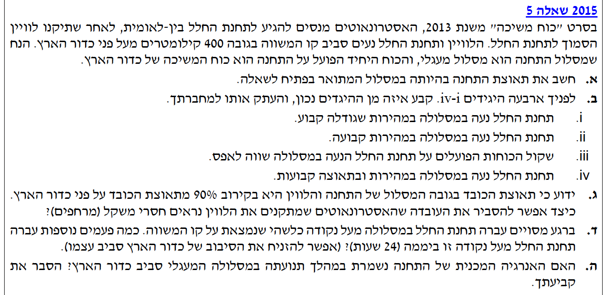

ברוכים הבאים! לפנינו שאלה קלאסית בנושא כבידה ותנועה מעגלית. מדובר בתחנת חלל הנעה סביב כדור הארץ.
ניגש לפתרון בצורה מסודרת: שלב אחר שלב נמיר יחידות ל-MKS, נצייר תרשימי כוחות עבור כל סעיף בנפרד, ונסביר את ההיגיון פיזיקלי מאחורי כל חישוב (למשל, תחושת "חוסר המשקל" או שימור האנרגיה במסלול מעגלי).
בהצלחה!

[תמונת השאלה המקורית]לא נמצאה תמונה בשם question-image.png באותה תיקייה.
סעיף א' - תאוצת תחנת החלל
מה נתון:
גובה מעל פני כדור הארץ: \( h = 400 \text{ km} = 4 \cdot 10^5 \text{ m} \).
💡 טיפ מורה:
שימו לב שמסת תחנת החלל כלל לא ניתנה בנתונים, והיא גם לא נדרשת! משוואות הדינמיקה מדגימות שכל גוף באותו מסלול (באותו רדיוס) יחווה את אותה התאוצה בדיוק, ללא קשר למסתו.
💡 עוגן לבדיקה עצמית:
תמיד כדאי לבחון את הגיוניות התוצאה המספרית בסוף החישוב. אנו יודעים שתאוצת הכובד על פני כדור הארץ היא בקירוב \( 10 \text{ m/s}^2 \). מכיוון שתחנת החלל נמצאת בגובה רב מעל פני הקרקע, משיכת כדור הארץ שם חלשה יותר ולכן התאוצה בהכרח חייבת להיות קטנה מ-10. התוצאה שקיבלנו, \( 8.67 \text{ m/s}^2 \), מתיישבת מצוין עם הציפייה הפיזיקלית שלנו. לו היינו מקבלים מספר הגדול מ-10, זו הייתה נורת אזהרה מובהקת המעידה על טעות בחישוב או בהמרת היחידות.
סעיף ב' - אפיון התנועה במסלול
מה נתון: 4 היגדים אפשריים המתארים את תנועת תחנת החלל.
מה מחפשים: קביעה איזה היגד נכון (i-iv) והעתקתו, על בסיס הבנת המושגים מהירות ותאוצה כווקטורים.
עקרונות בשימוש: הגדרת מהירות ותאוצה כווקטורים (גודל וכיוון)החוק הראשון והשני של ניוטון
ניתוח ההיגדים:
ננתח כל היגד ונשלול את השגויים:
היגד ii (מהירות קבועה): שגוי. מהירות היא וקטור. בתנועה מעגלית כיוון התנועה משתנה בכל רגע, לכן המהירות אינה קבועה.
היגד iii (שקול כוחות שווה לאפס): שגוי. קיים כוח הכבידה שמעקם את המסלול. אם שקול הכוחות היה אפס, הגוף היה נע בקו ישר (החוק הראשון של ניוטון).
היגד iv (מהירות ותאוצה קבועות): שגוי. שוב, שתיהן וקטורים. כיוון התאוצה תמיד למרכז המעגל ולכן משתנה במרחב בכל רגע.
היגד i (מהירות שגודלה קבוע): נכון. מדובר בתנועה מעגלית קצובה, בה גודל המהירות נשאר קבוע גם אם כיוונה משתנה.
ההיגד הנכון הוא i. תחנת החלל נעה במסלולה במהירות שגודלה קבוע.
💡 טיפ מורה:
זו מלכודת קלאסית בקינמטיקה וקטורית. חשוב לזכור תמיד: "מהירות" (Velocity) בפיזיקה היא וקטור! שינוי בכיוון פירושו שינוי במהירות. אם מתכוונים רק למספר, נשתמש במונח "גודל המהירות" (Speed).
סעיף ג' - תחושת חוסר המשקל (ריחוף)
מה נתון: תאוצת הכובד בגובה התחנה חזקה מאוד (כ-90% מבקרקע). למרות זאת, האסטרונאוטים נראים מרחפים ("חסרי משקל").
מה מחפשים: הסבר פיזיקלי המיישב את העובדה שיש כבידה חזקה עם התחושה של הריחוף.
נוסחאות ועקרונות בשימוש: \( \Sigma \vec{F} = m \vec{a} \)כוח נורמלי (N) אחראי לתחושת המשקל
תרשים כוחות (FBD):
פתרון צעד-אחר-צעד:
תחושת "משקל" ביומיום אינה כוח הכבידה עצמו, אלא הכוח הנורמלי (\(N\)) שהרצפה מפעילה עלינו חזרה כדי שלא ניפול דרכה. נרשום משוואת כוחות עבור האסטרונאוט, כשכיוון חיובי אל מרכז כדור הארץ:
\[ \Sigma F = m_{ast} \cdot a_{ast} \implies m_{ast} \cdot g_h - N = m_{ast} \cdot a_{ast} \]
כיוון שהתחנה והאסטרונאוט נמצאים באותו מרחק מכדור הארץ, שניהם נעים בדיוק באותה תאוצה (\( a_{ast} = a_{station} = g_h \)). נציב:
\[ m_{ast} \cdot g_h - N = m_{ast} \cdot g_h \implies -N = 0 \implies N = 0 \]
מסקנה: האסטרונאוט ותחנת החלל נופלים יחד באותה תאוצה. לכן אין שום כוח נורמלי ביניהם (\(N=0\)), והאסטרונאוט מרגיש ונראה "חסר משקל".
💡 טיפ מורה:
חשוב מאד לדייק! אין חלל ללא כבידה ליד כדור הארץ. מצב של "חוסר משקל" (Weightlessness) מתרחש תמיד כשאנחנו בנפילה חופשית (כוח הכובד הוא הכוח היחיד שפועל). זה נכון במעלית נופלת וגם בתחנה המקיפה את הארץ.
סעיף ד' - מספר חליפות ביממה
מה נתון:
פרק זמן: \( t = 24 \text{ h} = 86400 \text{ s} \).
תחנת החלל חלפה הרגע. הזנחת סיבוב כדור הארץ.
מה מחפשים: כמה פעמים נוספות תעבור התחנה מעל אותה נקודה ב-24 השעות הקרובות.
נוסחאות ועקרונות בשימוש: \( \Sigma F = ma \)\( F_G = G \frac{m_1 m_2}{r^2} \)\( a_R = \frac{v^2}{r} \)\( v = \frac{2\pi r}{T} \)
חישוב:
שלב 1: מציאת זמן המחזור \( T \)
נתחיל מהחוק השני של ניוטון. הכוח היחיד הפועל על תחנת החלל בציר הרדיאלי הוא כוח הכבידה של כדור הארץ:
\[ \Sigma F_R = m a_R \]
\[ G \frac{M_E m}{r^2} = m \frac{v^2}{r} \]
נצמצם את המסה \( m \) של תחנת החלל ואת אחד הרדיוסים \( r \), ונציב את הקשר בין מהירות לזמן מחזור \( v = \frac{2\pi r}{T} \):
\[ G \frac{M_E}{r} = \left( \frac{2\pi r}{T} \right)^2 \]
\[ G \frac{M_E}{r} = \frac{4\pi^2 r^2}{T^2} \implies T = \sqrt{\frac{4\pi^2 r^3}{G M_E}} \]
נציב נתונים (\( r = 6.78 \cdot 10^6 \text{ m} \)):
התחנה משלימה קצת יותר מ-15 מחזורים שלמים. לכן היא תחלוף בדיוק 15 פעמים נוספות.
התחנה תעבור עוד 15 פעמים מעל אותה נקודה ביממה.
💡 טיפ מורה:
שימו לב לניסוח: נשאלנו "כמה פעמים נוספות", כלומר החל מרגע החליפה הנוכחי, אנו מתעניינים רק במספר השלם של ההקפות שייכנס לתוך מסגרת הזמן.
סעיף ה' - שימור האנרגיה המכנית
מה נתון: תנועה מעגלית. הכוח היחיד הוא כוח המשיכה.
מה מחפשים: קביעה והסבר: האם האנרגיה המכנית של התחנה נשמרת?
נוסחאות ועקרונות בשימוש: משפט עבודה-אנרגיה: \( W_{nc} = \Delta E \)עבודה: \( W = F \Delta x \cos \theta \)\( E = -\frac{G M_E m}{2r} \)
הסבר:
ניתן להסביר את שימור האנרגיה המכנית בשלוש דרכים שונות ומקבילות:
עבודה של כוחות לא משמרים: משפט עבודה-אנרגיה קובע ש-\(W_{nc} = \Delta E\). הכוח היחיד הפועל על התחנה הוא כוח הכבידה שהוא כוח משמר. כיוון שאין עבודת כוחות לא משמרים (כמו חיכוך), האנרגיה המכנית נשמרת.
עבודת כוח הכבידה במעגל: בתנועה מעגלית, כיוון כוח הכבידה רדיאלי והמהירות משיקה. הזווית ביניהם תמיד \(90^\circ\). לכן הכוח אינו מבצע עבודה (\(\cos 90^\circ = 0\)). האנרגיה הקינטית קבועה (גודל המהירות קבוע), והפוטנציאלית קבועה (רדיוס קבוע).
הסתמכות על ביטוי האנרגיה המכנית: האנרגיה המכנית הכוללת של גוף במסלול מעגלי (שהיא סכום האנרגיה הקינטית והאנרגיה הפוטנציאלית הכובדית \( E = E_k + U_G \)) שווה לביטוי המצומצם: \( E = -\frac{G M_E m}{2r} \). הנוסחה תלויה אך ורק בפרמטרים קבועים (קבוע הכבידה, מסות הגופים ורדיוס המסלול). כיוון שאף אחד מפרמטרים אלו אינו משתנה במהלך תנועת התחנה, בהכרח נובע שהאנרגיה הכוללת נשארת קבועה ונשמרת.
כן, האנרגיה המכנית של התחנה נשמרת. כוח הכבידה משמר, ולא פועלים כוחות לא-משמרים. בנוסף, האנרגיה הקינטית והפוטנציאלית קבועות בנפרד (או לחלופין, ביטוי האנרגיה הכוללת תלוי בקבועים בלבד).
💡 טיפ מורה:
כלל ברזל חשוב: במסלול אליפטי, האנרגיה הקינטית והפוטנציאלית כן משתנות, אבל סך האנרגיה המכנית עדיין נשמר כי כבידה היא כוח משמר. במסלול מעגלי יש תכונה מיוחדת שכל אנרגיה בנפרד נשארת קבועה.
נוסח השאלה המקורית
[תמונת השאלה המקורית]לא נמצאה תמונה בשם question-image.png.